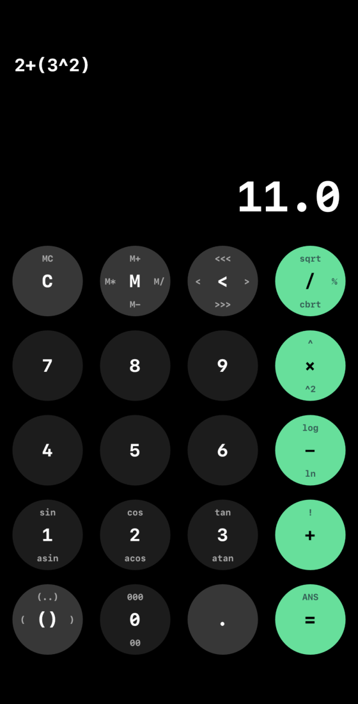

Since beginning my second degree in Computer Science, I have undergone a thorough introduction into software development. So far, I have completed one major project at SFU - a web-based multiplayer game built off of the NodeJS framework. Currently, I am co-developing my first iPhone and Android application - SwiftCalc, which is an efficient, minimalistic calculator that aims to provide the utility of a scientific/graphing calculator with a profile no larger than that of the native calculator that comes pre-installed on a new phone. Furthermore, a repository of my schoolwork can be found here.
 SwiftCalc is a calculator app that will offer the functionality of a more powerful calculator with a minimalistic interface. The app is built using Google's Flutter platform, which allows for cross-platform development. The calculator utilizes swipe gestures to allow users to access multuple functions from a single button.
S.F.U. is a web-based game built off of the NodeJS framework that
is currently running on Heroku's web hosting platform. The game
uses Socket.IO to enable multiple users to play in game lobbies.
The goal of the game is to navigate through the halls of Simon
Fraser University whilst destroying enemies (in the form of
bad grades). S.F.U. offers a unique and interactive gaming.
I co-developed S.F.U. and played a large role in the development
of the game engine and web interface. I was also responsible for
writing tests for the game using Mocha and Chai.